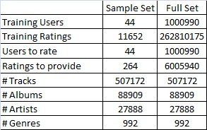
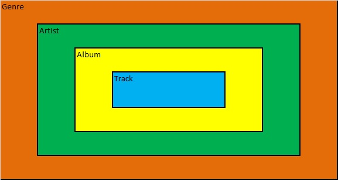
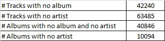
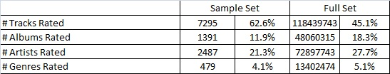
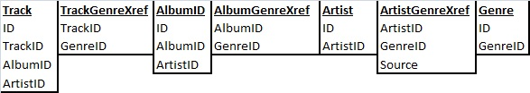
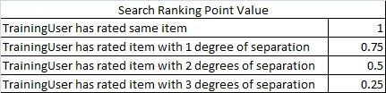
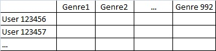
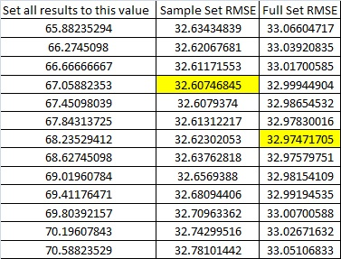
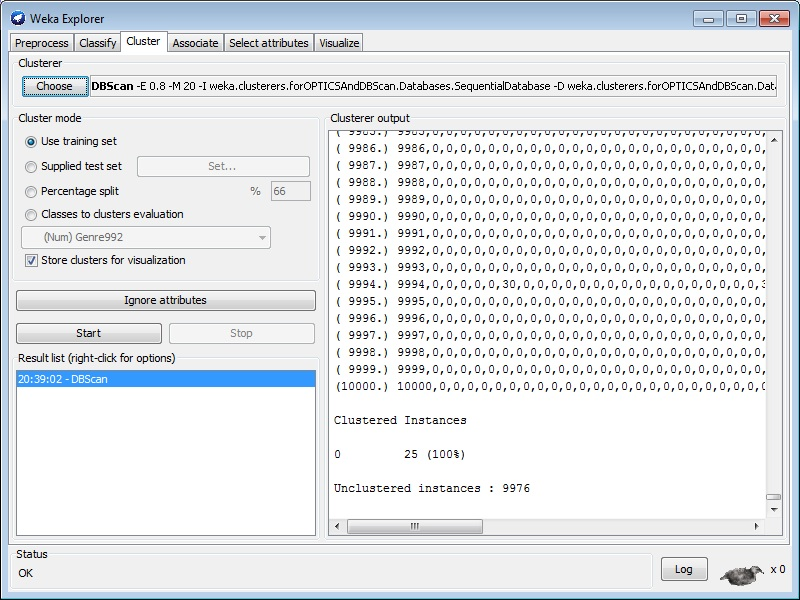

The KDD Challenge 2011 was a publicly available Data Mining contest to see how well user ratings for music tracks, albums, artists and genres could be predicted given a set of sanitized training data and a relational description of the four item types. There were two challenges in the contest, Track 1 and Track 2. Track 1 was comprised of a set of training data where a training set of users rate an item (track, album, artist or genre) from 0 to 100 on a given date and time. Each item is guaranteed to be rated 20 times. These ratings were presented in text files stored in the following format:
UserId|#UserRatings\n
Followed by #UserRatings lines using the following format:
ItemId\tScore\tDate\tTime\n
Four additional files were included to describe the relation between the items.
trackData.txt - Track information formatted as:
TrackId|AlbumId|ArtistId|Optional GenreId_1|...|Optional GenreId_k\n
albumData.txt - Album information formatted as:
AlbumId|ArtistId|Optional GenreId_1|...|Optional GenreId_k\n
artistData.txt - Artist listing formatted as:
ArtistId\n
genreData.txt - Genre listing formatted as:
GenreId\n
The challenge was to create and train a system that could be presented with four items with ratings from a new user. Using these four items and their ratings, six additional items with date and time stamps would be presented for the same user and the system had to provide a score from 0 to 100, discretized into 256 steps. The root mean squared error (RMSE) of all the ratings was used as the score to rank teams by. The winning team had an RMSE of 21.0147 for the full item set. In the class project, we were asked to repeat the Track 1 challenge, but were allowed to work with a sample of the data set. The details of the full and sample data sets are shown in Figure 1. It is important to note that the user ID number for the training user set and the users to rate are separate sets.
The first step in this challenge was to understand the data hierarchy. Users can rate tracks, albums, artists or genres. The key is to know from the music domain that tracks belong to an album and are performed by an artist. Albums are created by artists. Each track, album and artist belongs to a genre, but genres are often arbitrary. Figure 2 shows the hierarchy between tracks, albums, artists and genres.
Difficulty applying genre labels is shown in the provided data set by the variable length list of genres attached to each track and album. A real life example is to listen to a popular song from the 80s and ask the listener if it is in the "Rock", "Classic Rock", "Hair Metal" or "80s" genre. It is most difficult to classify artists by genre because many artists' styles evolve over their careers and may span many genres. This difficulty is demonstrated by the fact that the data set does not include a list of genres for each artist. In the modern world of digital releases, tracks can be released as singles without an album. Similarly, soundtrack albums from a movie typically do not have a single artist. Figure 3 details the missing or non-existent
Before creating a mining strategy the last piece of useful information to know is the breakdown of the training data available for the system. Figure 4 details this breakdown and provides useful information which will be used in the next section.
Working directly with the provided text files is not very useful. Reading the data into memory then manipulating it is never a good idea, especially for the 5 GB full training set. The data needs to be searched, sorted and associated in many ways and a relational database is the best data structure to accomplish that. I chose to use SQLite and loaded the data into the Tables and Columns shown in Figure 5. Most of the columns match the data provided for the challenge. The 'ID' columns are added to be able to use sequential indexes for each record, so that matricies can be created more easily. The ArtistGenreXref table was created using the Track and Album data. The Source column indicates whether the entry came from the Track or Album dataset.
The other main tool created was a rating script that would anonymously calculate the RMSE for a given set of data. It is very important that the solutions are kept separate from the training algorithms to replicate the original contest. Otherwise it would be trivial to create an overtrained model to fit all the solutions given the inputs.
When creating a strategy for mining the music rating data, the winning teams' papers, posters and slides from the original contest were publicly available. While these papers and slides were very well written, most of the concepts were past the scope of the CSCI 568 class. CSCI 568 is an introduction to the field of data mining and covers the classic algorithms. Some of the algorithms used by the top teams that were not covered in CSCI 568 included Reduced Boltzman Machines, Advanced Matrix Decomposition for time series data and SVD. Although winning teams spent a lot of time examining the time and date information, time series data was not covered in CSCI 568 and will not be used in any of the strategies.
The first strategy used was to use the most simple model possible. Assign all the ratings the same value and see what the scores were. While this is a very naïve strategy, it provides a baseline against which to judge the more "intelligent" strategies.
The second strategy used was to search for similar users in the full training set. When presented with a new user to rate with 10 items IDs (4 with ratings, 6 without), the database could be queried for training users who rated the same items. Figure 6 shows the hierarchy used to rank training users compared to the new user. A "degree of separation" refers to the item hierarchy shown in Figure 2. If a training user rated a track from the album the new user rated, that would be 1 degree of separation. If a training user and the new user both rated tracks from the same album, that would be 2 degrees of separation. Similarly if a training user rated an artist and the new user rated a track by the same artist, that would be 2 degrees of separation.
After finding a ranked list of the users who have rated the most items in common, the top 100 or so users would be extracted and examined in more detail. The users on this smaller list have rated the same items, but may or may not have rated them in a similar fashion. Using a distance metric and the 4 provided ratings from the new user, the subset of 100 training users would be ranked according to who rated items most similarly. This ranking would be used to determine the best score for each new user by blending the top users who rated similar items in a similar fashion.
This strategy is a brute force search and therefore involves a lot of calculations. It is not expected to run quickly, but should provide good results. It does not take advantage of data mining techniques but is more intelligent than the simple strategy.
The third strategy involves creating a large matrix where the rows are the training users and the columns are the items. The easy approach to this is to use all 624,961 items, however, this approach would take far too long to calculate using standard algorithms and software packages and most likely crash due to lack of memory. This naïve matrix would also fail to capture the relation between different items rated. If a track is rated by a training user, what can be inferred about the artist who sang that track?
In order to get some results quickly, a Genre rollup schema was used. What is meant by Genre rollup is to take every rating from a training user and get all the genres that belong to each items they rated. Each item rating would be assigned to all the genres and averaged in the case of overlap to create one row vector per training user.
For example if User 123 rates a track with ID 543 as a 80/100 and that track is associate with genre 5, 73 and 103 and User 123 rates an album with ID 3453 as a 20/100 and that track is associate with genre 725 and 103, the resultant vector would be all zeros except genre 5 would be 80, genre 73 would be 80, genre 725 would be 20 and genre 103 would be 50, the average of 20 and 80. Figure 7 shows what this matrix would look like.
Genre was chosen as the rollup because there are the fewest unique Genres at 992 compared with 507172 tracks, 88909 albums and 27888 artists. This was done primarily to minimize run time and memory requirements. Genre is a terribly inaccurate and arbitrary label for tracks, albums and artists as shown above.
Once a numerical matrix is obtained it can be mined for clusters using k-NN and k-Means. A matrix decomposition can also be attempted. Classification and association algorithms require named classes. For these algorithms, the numerical values can be transformed into classes {Hi,Medium,Low} representing scores {[0-35), [35,65],(65,100]}. If this strategy is successful, other attributes can be extracted including each training user's mean, and standard deviation. This may help transform the ratings into a more personal {Hated_It, Average, Loved_it} representing { [Less than User_Mean - 1*User_stdev], [User_mean +/- 1*User_stdev], [More than User_Mean + 1*User_stdev]}.
Unfortunately, it takes a long time to create, debug and run the databases and strategies described above. Especially when errors in the database are discovered after large data sets have been run and must be repeated. Some of these re-runs can take 8 hours to reload the database and require 12 hours to re-create data run from the flawed database. More discussion of these pitfalls is in the next section.
The simple strategy was the only strategy that was able to return results in the time allotted. Based on the results shown in Figure 8, the best model is to set all scores to 174/256 * 100 or 68.235.
The search strategy was not implemented because of lack of time. It would be interesting to see the results quality and execution time. The Genre Rollup strategy data matrix was created with 10,000 user entries, however, the mining tools did not yield results. Weka's DBScan algorithm was unable to cluster the majority of the 10,000 entries as shown in Figure 9. Figure 10 shows the partially complete KNIME workflow. MATLAB was used to attempt an SVD decomposition plus a very wacky ANN idea, but the ANN training algorithm ran out of memory as shown in Figure 11. The SVD has no results because I was unable to figure out how to use the three matrices provided to make new user predictions, even when experimenting with simple results.
Overall the project was successful, albeit very slow. Some of the lessons learned were to focus on execution speed of all code and database queries. This was my first real world data mining challenge and I believe that over time I will develop a toolbox of fast algorithms to approach common data mining tasks. Specifically on this project I had three main problems. First, I did not always remember to build indexes for the tables I created. For the Genre Rollup, the creation of one index I forgot took 12 hours. The second mistake was that I did not verify the data had been correctly entered into SQLite after I ran my extraction scripts. Later scripts uncovered errors, forcing me to reload and verify the data many times, wasting a few hours for some reload/verify cycles. My final lesson learned was to learn to use Ruby better before using it on another data challenge. I am more used to C and when I wrote a function using a the logic if( expression ) else … where expression can evaluate to 0, it did not behave as expected. This caused even more wasted time.
The biggest challenge for this project was the time constraint, especially when performing the first analysis on real world data. The data encountered in the textbooks and other projects has been nicely formatted to allow for demonstration of various techniques. Real world data is exactly as describe in the textbook - a big mess. With a larger team and more time, I believe that a solution better than the naïve approach could be created. Overall it was very rewarding, but frustrating because good results were not obtained.